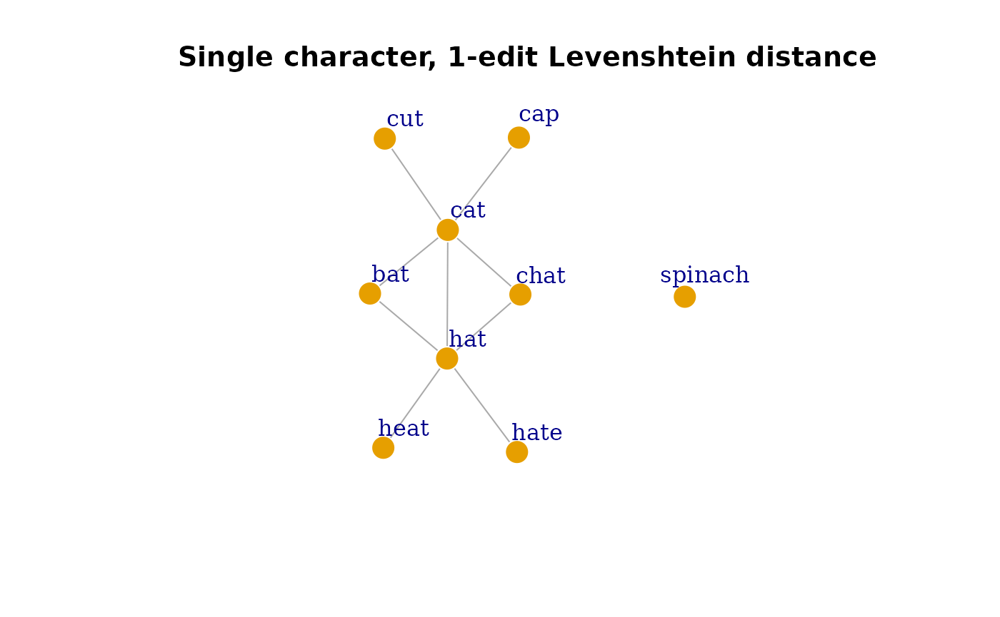
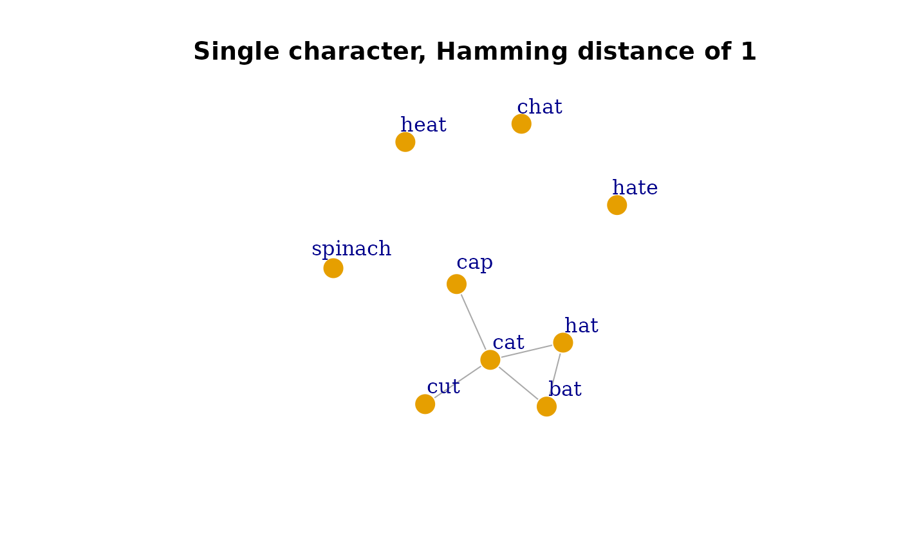
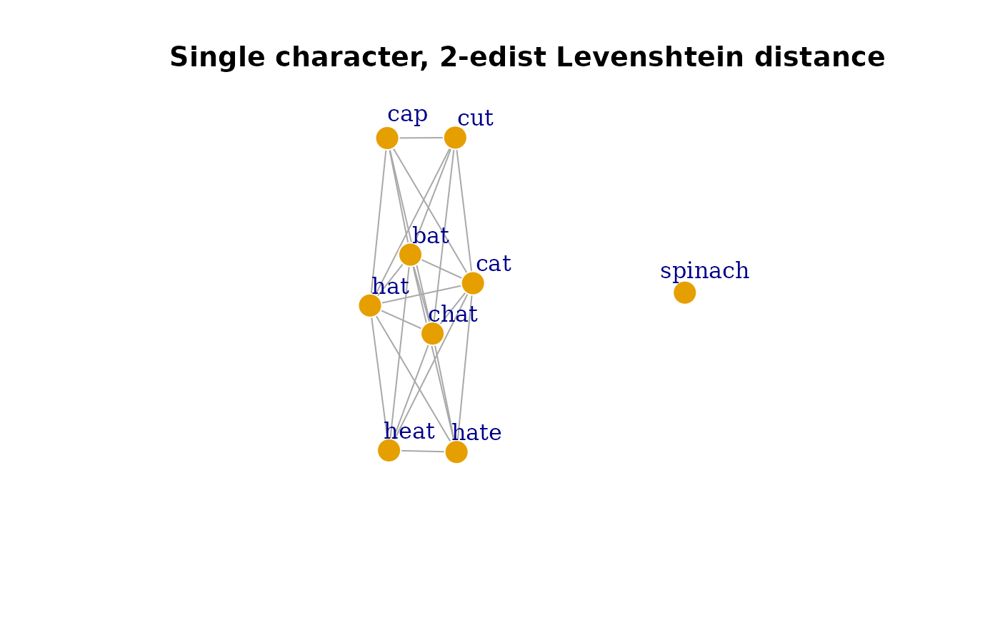
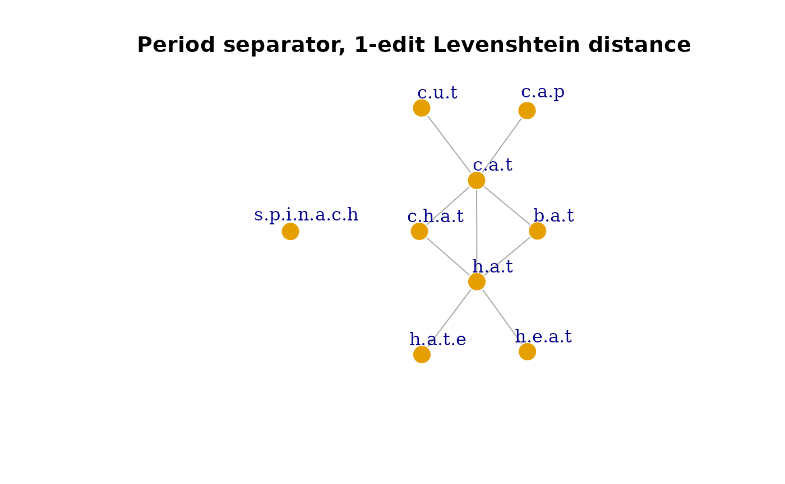

A Quick Introduction to hood2net
introduction-to-hood2net.RmdIntroduction and Motivation
The hood2net package takes a list of words and/or their
phonological transcriptions and creates a language network based on
their phonological or orthographic neighborhood structure. This is where
the name of the package comes from: From a word’s neighborHOOD to a
NETwork.
First, the phonological/orthographic neighbors for each item in the list are identified based on various definitions of a “neighbor”. A pair of words can be considered to be neighbors (and thus become connected in the language network) via the following ways: edit-distance (substitution, deletion, or addition; i.e., Levenshtein distance) or substitution only (i.e., Hamming distance). The default setting uses a distance of 1, but larger distances can be specified for a more liberal definition of a neighbor. The segmentation of the transcription can also be specified: either based on single character (i.e., single letter or phoneme) or user-specified segments indicated by separators (e.g., larger chunks such as diphthongs, syllables, or morphemes that are longer than a single character separated by a symbol like ‘.’ [period] or ’ ’ [space]).
hood2net then summarizes the neighborhood information
for all items in the list into an igraph network object for
subsequent analyses. Helper functions for extracting network metrics,
neighborhood size, and other information from the language network are
provided. This package is intended for psycholinguists interested in
modeling language networks and lexical neighborhoods in various
languages.
Why hood2net?
Although there are several resources that exist for calculating the
neighborhoods or similarity measures of words in language, to the best
of my knowledge none of these existing resources provide capabilities to
convert the neighborhood structure of words into a network, which is
necessary for network analyses of such lexical information. Below are a
few examples and a brief statement of their purpose and function and how
it compares to hood2net:
Jiwar is a multilingual neighborhood calculator and database
for 40 languages of various scripts (Alzahrani, 2025). It provides
phonological, orthographic, and phonographic neighborhood measures for
these languages based on the OpenSubtitles corpus. Although it is a
highly comprehensive database and neighborhood calculator, Jiwar does
not provide the functions to convert the neighborhood information into a
language network. The multilingual word lists and phonological
transcriptions from Jiwar could be provided to hood2net to
produce language networks and extract additional types of network
metrics (e.g., closeness centrality or eigenvector centrality). It is
also worth noting that the vast majority of neighborhood calculators or
databases are limited to a single language; hence another strength of
hood2net is the ability to compute neighborhood measures
for languages not yet represented or unavailable in the literature.
Another database worth mentioning is by Alderete et al. (2025), who
created phonological similarity networks of English based on the
SUBTLEX-US English corpus. Although this database contains phonological
networks, it is limited to English. By allowing user-specified word
lists, hood2net allows for word similarity networks to be
constructed for a variety of languages, enabling network analyses to be
extended to languages beyond English.
Set up
The development version of hood2net can be downloaded
from Github using the following code. In order to compile the package on
your local computer, additional programs may need to be installed. For
instance, Windows users will need to install RTools,
whereas Mac users will probably need XCode.
# install.packages('devtools')
# devtools::install_github('csqsiew/hood2net')
# alternatively
# install.packages('pak')
# pak::pkg_install("csqsiew/hootnet")
# then load the package
library(hood2net)Alternatively, hood2net can also be installed from CRAN
as follows:
Creating networks
We’ll create our first language network from a sample list of words provided in the package. Let’s view the list:
sample1
#> item length
#> 1 cat 3
#> 2 bat 3
#> 3 cut 3
#> 4 cap 3
#> 5 hat 3
#> 6 chat 4
#> 7 heat 4
#> 8 hate 4
#> 9 spinach 7Notice that it is a list of words and the second column contains the number of letters. Let’s say we want to create an orthographic similarity network where pairs of words that are different by the substitution, deletion or addition of one letter. We can run the following R code as follows:
g1 <- make_network(sample1)
#> | | | 0% | |======== | 11% | |================ | 22% | |======================= | 33% | |=============================== | 44% | |======================================= | 56% | |=============================================== | 67% | |====================================================== | 78% | |============================================================== | 89%
library(igraph)
#>
#> Attaching package: 'igraph'
#> The following objects are masked from 'package:stats':
#>
#> decompose, spectrum
#> The following object is masked from 'package:base':
#>
#> union
plot(g1, vertex.frame.color = 'white', vertex.label.dist = 2.5,
frame = TRUE, main = 'Single character, 1-edit Levenshtein distance')
Notice that the default settings of make_network is to
segment each item based on single characters, and to create neighbors
based on 1-edit (Levenshtein) distance.
If we would like to create substitution-only networks, we can easily
do this by changing the arguments in make_network:
g2 <- make_network(sample1, neighbor_type = 'hamming') # sub-only
#> | | | 0% | |======== | 11% | |================ | 22% | |======================= | 33% | |=============================== | 44% | |======================================= | 56% | |=============================================== | 67% | |====================================================== | 78% | |============================================================== | 89%
plot(g2, vertex.frame.color = 'white', vertex.label.dist = 2.5,
frame = TRUE, main = 'Single character, Hamming distance of 1')
For a more liberal operationalization of neighbors, we can also allow pairs of words to be neighbors if they are different by up to 2-edit distance, by adapting the code as follows:
g3 <- make_network(sample1, edit_size = 2)
#> | | | 0% | |======== | 11% | |================ | 22% | |======================= | 33% | |=============================== | 44% | |======================================= | 56% | |=============================================== | 67% | |====================================================== | 78% | |============================================================== | 89%
plot(g3, vertex.frame.color = 'white', vertex.label.dist = 2.5,
frame = TRUE, main = 'Single character, 2-edist Levenshtein distance')
Notice that in this network, the words ‘heat’ and ‘hate’ are connected as a deletion and an addition (2 operations) are needed to convert from one string into the other.
If you don’t want to use single characters as the segmentation
scheme, the make_network_sep function can be used instead
and each item can be segmented based on the separator symbol specified.
In this sample list, we have the same list of items as before, but with
periods (.) separating each letter. We can use the
make_network_sep function to create a network by segmenting
the items based on the periods:
sample2
#> item length
#> 1 c.a.t 3
#> 2 b.a.t 3
#> 3 c.u.t 3
#> 4 c.a.p 3
#> 5 h.a.t 3
#> 6 c.h.a.t 4
#> 7 h.e.a.t 4
#> 8 h.a.t.e 4
#> 9 s.p.i.n.a.c.h 7
g4 <- make_network_sep(sample2, separator = '.')
#> | | | 0% | |======== | 11% | |================ | 22% | |======================= | 33% | |=============================== | 44% | |======================================= | 56% | |=============================================== | 67% | |====================================================== | 78% | |============================================================== | 89%
plot(g4, vertex.frame.color = 'white', vertex.label.dist = 2.5,
frame = TRUE, main = 'Period separator, 1-edit Levenshtein distance')
This function may be useful for situations where you would like
subgroups of characters to be considered as a single unit, for instance,
if there are diphthongs (e.g., “\aɪ\”) or if you wish to explore
higher-order structures like syllabic structure. The default separator
symbol is the period, but other symbols like ’ ’ [space] are also
permitted. The other arguments mentioned, edit_size and
neighbor_type, are also applicable for the
make_network_sep function.
Pro-tip: You may want to save very large networks as they take a long time to complete. This can be done easily and then you can reload the file into your next R session.
Computing network and neighborhood measures
Once the language network is generated, it can be used to (i) obtain global-level or macro-level information about the network structure, and (ii) generate neighborhood-metrics for individual words.
Obtaining macro-level network measures
The helper function get_network_info can be used to get
this information readily:
get_network_info(g1)
#> nodes edges ASPL global CC mean CC
#> 9.000 9.000 1.821 0.273 0.267
#> diameter mean degree no. components prop. in LCC
#> 3.000 2.000 2.000 0.889It returns in a named vector:
-
nodes: The number of nodes. -
edges: The number of edges. -
ASPL: Average shortest path length refers to the mean of the shortest path between all possible node pairs (that have an non-infinite path). -
global CC: Global clustering coefficient or transitivity refers to the proportion of closed triangles in the network relative to the number of possible triangles. It is a measure of overall level of local connectivity among nodes in the network. -
mean CC: The average local clustering coefficient refers to the mean of each node’s local clustering coefficient, which measures the amount of interconnectivity in the local neighborhood of each node. -
diameter: Diameter refers to the length of the longest short path between node pairs in the network. -
mean degree: The average degree of all nodes in the network. Degree refers to the number of links (or neighbors) that each node has. -
no. components: The number of distinct, separate components in the network. -
prop. in LCC: The proportion of nodes found in the largest connected component of the network.
For more details about these measures and their application to
language or cognitive networks, please refer to https://csqsiew.github.io (an
online tutorial “Introduction to Network Analysis in
igraph”) and Siew et al. (2019).
If you wish to compute other network measures, you can simply pass
the network object into the relevant igraph function. Below
we compute the density of the network g1:
library(igraph)
edge_density(g1)
#> [1] 0.25Compute micro-level network measures for individual nodes
Another cool feature of hood2net is the ability to
easily extract the neighborhood information for all or subsets of nodes
in the network.
To obtain neighborhood size, which corresponds to node degree:
get_neighbor_size(g1)
#> cat bat cut cap hat chat heat hate spinach
#> 5 2 1 1 5 2 1 1 0To obtain local clustering coefficient, which is a measure of how interconnected a node’s neighborhood is:
get_neighbor_clustering(g1)
#> cat bat cut cap hat chat heat hate spinach
#> 0.2 1.0 0.0 0.0 0.2 1.0 0.0 0.0 0.0It is also possible to compute the mean of a node’s neighbors’
property. Recall that in sample1, there was a second column
depicting the length of the word:
sample1
#> item length
#> 1 cat 3
#> 2 bat 3
#> 3 cut 3
#> 4 cap 3
#> 5 hat 3
#> 6 chat 4
#> 7 heat 4
#> 8 hate 4
#> 9 spinach 7In the constructed network, length is included as a node
or vertex attribute.
summary(g1)
#> IGRAPH 296069e UN-- 9 9 -- test
#> + attr: name (g/c), name (v/c), length (v/n)This makes it possible to obtain the mean length of each node’s neighbor, as follows:
get_neighbor_mean(g1, attribute = 'length')
#> cat bat cut cap hat chat heat hate spinach
#> 3.2 3.0 3.0 3.0 3.6 3.0 3.0 3.0 NaNNotice that the name of the node attribute must be specified. A
useful application of this function is that lexical properties of words
can be appended to the list that was initially submitted to
make_network, and automatically embedded into the network
as node attributes. If word frequency were included, it would be
possible use this function to compute mean neighborhood frequency for
all items in the network, and also compute macro-level network
information such as assortative mixing by frequency (i.e., do
high-frequency words tend to be connected to other high-frequency words
in the network?).
References
Alderete, J., Mann, S., & Tupper, P. (2025). Open-access network science: Investigating phonological similarity networks based on the SUBTLEX-US lexicon. Behavior Research Methods, 57(3), 96. https://doi.org/10.3758/s13428-025-02610-9
Alzahrani, A. (2025). Jiwar: A database and calculator for word neighborhood measures in 40 languages. Behavior Research Methods, 57(3), 98. https://doi.org/10.3758/s13428-025-02612-7
Siew, C. S. Q., Wulff, D. U., Beckage, N. M., & Kenett, Y. N. (2019). Cognitive Network Science: A Review of Research on Cognition through the Lens of Network Representations, Processes, and Dynamics. Complexity, e2108423. https://doi.org/10.1155/2019/2108423